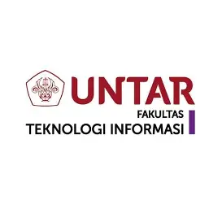
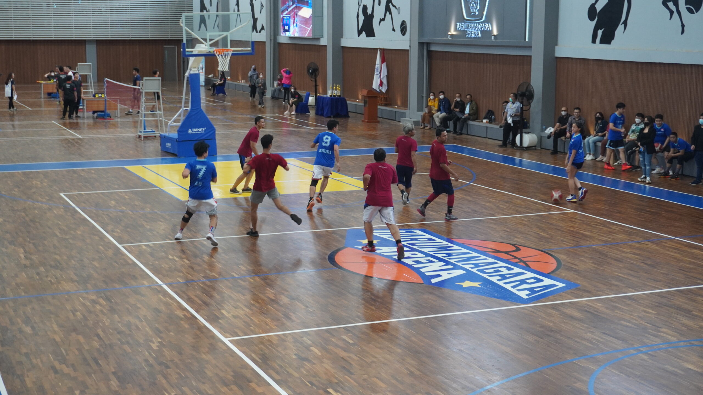
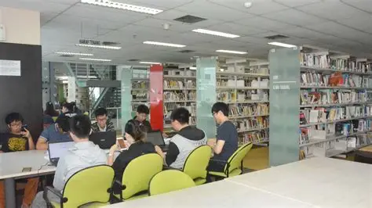
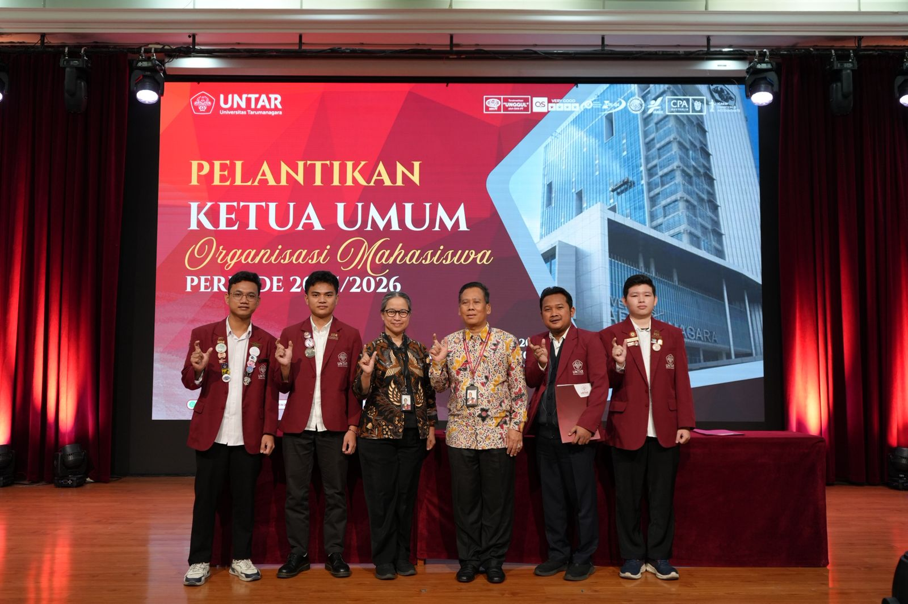

Artikel Terbaru
Universitas Tarumanagara
Universitas dengan 9 fakultas yang menjalankan Tridharma Perguruan Tinggi.

Fakultas Teknologi Informasi
Fakultas yang menaungi program studi Sistem Informasi.

Akreditasi Sistem Informasi
Program studi Sistem Informasi terakreditasi Unggul oleh LAM Infokom.

Tarumanagara Arena
Lapangan indoor untuk berbagai kegiatan olahraga mahasiswa.

Perpustakaan
Tempat belajar dan mencari referensi bagi mahasiswa.

Organisasi Kemahasiswaan
Pelantikan ketua umum organisasi mahasiswa periode 2025/2026.